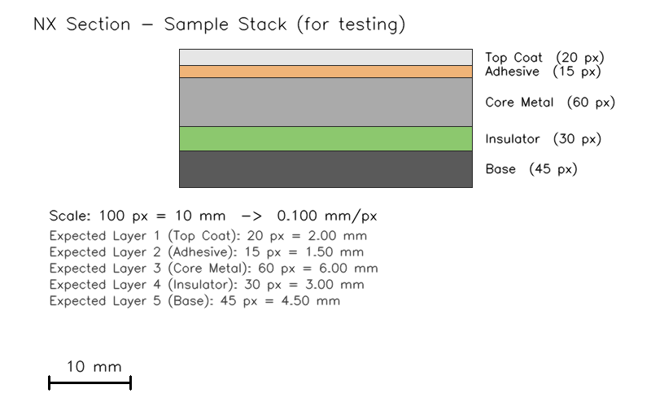

두 가지 버전 제공
설치 없이 브라우저에서 바로 사용하거나, 데스크톱 앱으로 설치
웹 버전 (브라우저 실행)
설치·다운로드 불필요. 크롬/사파리에서 바로 실행되며, 이미지는 서버로 전송되지 않고 클라이언트에서 전부 처리됩니다.
지금 실행 →OpenCV.js + SheetJS 기반 · 오프라인에서도 동작
데스크톱 버전 (PyQt6)
Python 환경에서 실행하는 네이티브 앱. 동일 기능이며 대용량 이미지 처리 시 더 안정적입니다.
설치 방법 보기 ↓Python 3.10+ 필요
주요 기능
NX 단면 이미지를 불러와서 측정→기록→내보내기까지 원스톱으로
이미지 드래그 & 드롭
PNG, JPG, BMP, TIFF 형식의 NX 스크린샷을 캔버스에 드래그하면 바로 로드됩니다.
스케일 보정
기지(旣知)의 두 점을 클릭하고 실제 mm 값을 입력하면 자동으로 pixel/mm 비율을 계산합니다.
하이브리드 레이어 검출
OpenCV Canny 엣지 검출 + 수직 측정선으로 경계를 자동 분할. 수동 보정도 가능합니다.
실시간 테이블 & Excel 내보내기
검출 즉시 우측 테이블에 반영, 레이어 이름 편집 가능, .xlsx로 저장합니다.
샘플 단면 이미지
5개 레이어(Top Coat, Adhesive, Core Metal, Insulator, Base) 합성 단면

검출 결과 (자동 측정)
| Layer | Top (px) | Bottom (px) | Thickness (px) | Thickness (mm) |
|---|---|---|---|---|
| Layer 1 — Top Coat | 60.00 | 80.00 | 20.0 | 2.00 |
| Layer 2 — Adhesive | 80.00 | 95.00 | 15.0 | 1.50 |
| Layer 3 — Core Metal | 95.00 | 155.00 | 60.0 | 6.00 |
| Layer 4 — Insulator | 155.00 | 184.00 | 29.0 | 2.90 |
| Layer 5 — Base | 184.00 | 231.00 | 47.0 | 4.70 |
다운로드
소스 코드를 받아서 맥 / 윈도우 / 리눅스에서 실행할 수 있습니다
{kind=link}
1 설치
Python 3.10 이상이 필요합니다
2 실행 & 사용법
앱을 띄우고 6단계로 측정 완료
- NX 단면 스크린샷을 캔버스에 드래그 & 드롭하거나 메뉴 파일 → 이미지 열기 (Ctrl+O).
-
기준선 설정 버튼 → 실제 길이를 아는 두 점 클릭 →
다이얼로그에 실제 mm 값 입력 → OK.
우측 하단에
mm/pixel값이 표시됩니다. - 측정선 그리기 버튼 → 적층부를 가로지르는 두 점 클릭. 기본 수직 스냅, Shift 키로 자유 각도.
- 자동 레이어 검출: Canny 엣지 검출로 경계가 빨간색으로 표시되고, 우측 테이블에 Layer 1…N이 채워집니다.
- 필요 시 테이블에서 레이어 이름 편집, 선택 행 삭제로 수동 보정.
-
Excel로 내보내기 (Ctrl+S) →
.xlsx파일로 저장. 이미지 경로와 mm/pixel 메타 포함.
3 프로젝트 구조
모듈별 역할 분리: core (분석) + gui (인터페이스)
4 기술 스택
requirements.txt 기준
5 테스트
핵심 모듈 유닛 테스트 8개 포함
| 테스트 | 검증 내용 |
|---|---|
| test_scale_calibrator_basic | 100px = 10mm → mm_per_pixel = 0.1 |
| test_scale_calibrator_rejects_zero_length | 거리 0인 기준선 거부 |
| test_scale_calibrator_rejects_non_positive_mm | 음수/0 mm 입력 거부 |
| test_detect_layers_recovers_known_thicknesses | 합성 3-레이어 두께 복원 (±2px) |
| test_detect_layers_returns_empty_for_uniform | 균일 이미지 → 빈 결과 |
| test_layers_from_boundaries_rebuilds_layers | 경계값에서 레이어 재구축 |
| test_measurement_recompute_applies_mm_ratio | mm 비율 적용 재계산 |
| test_excel_export_roundtrip | xlsx 저장 → 재로드 데이터 일치 |
캔버스 조작 팁
| 입력 | 동작 |
|---|---|
| 마우스 휠 | 확대 / 축소 |
| 마우스 드래그 (탐색 모드) | 이미지 스크롤 |
| Ctrl+O | 이미지 열기 |
| Ctrl+S | Excel로 저장 |
| Ctrl+Q | 종료 |
| Shift + 두 번째 클릭 | 측정선 자유 각도 (수직 스냅 해제) |